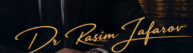
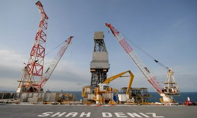
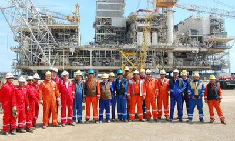
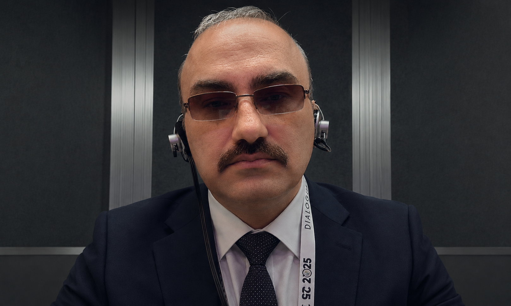
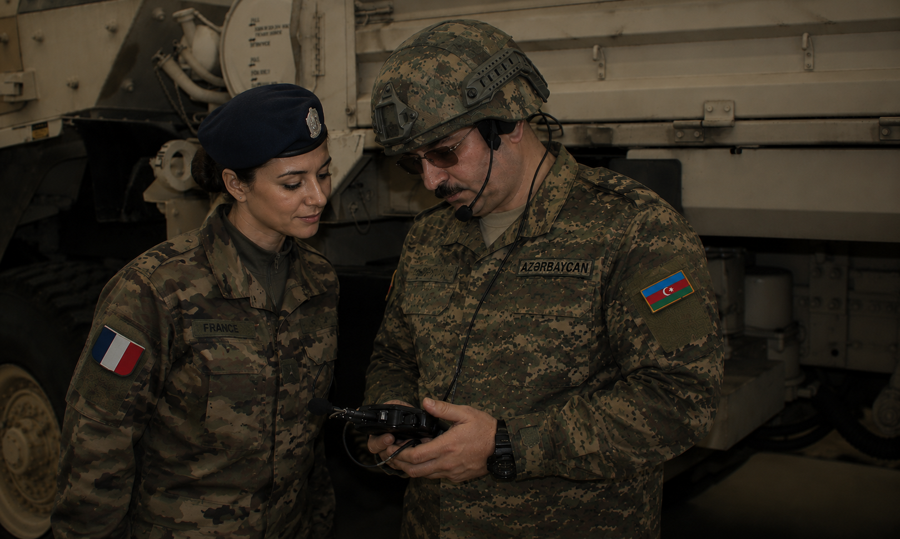
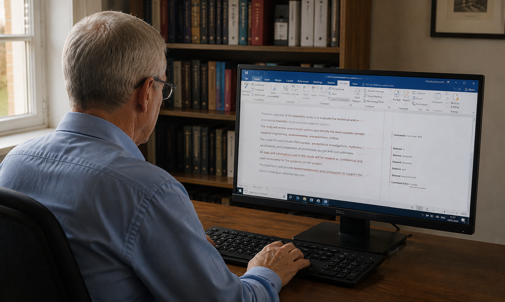
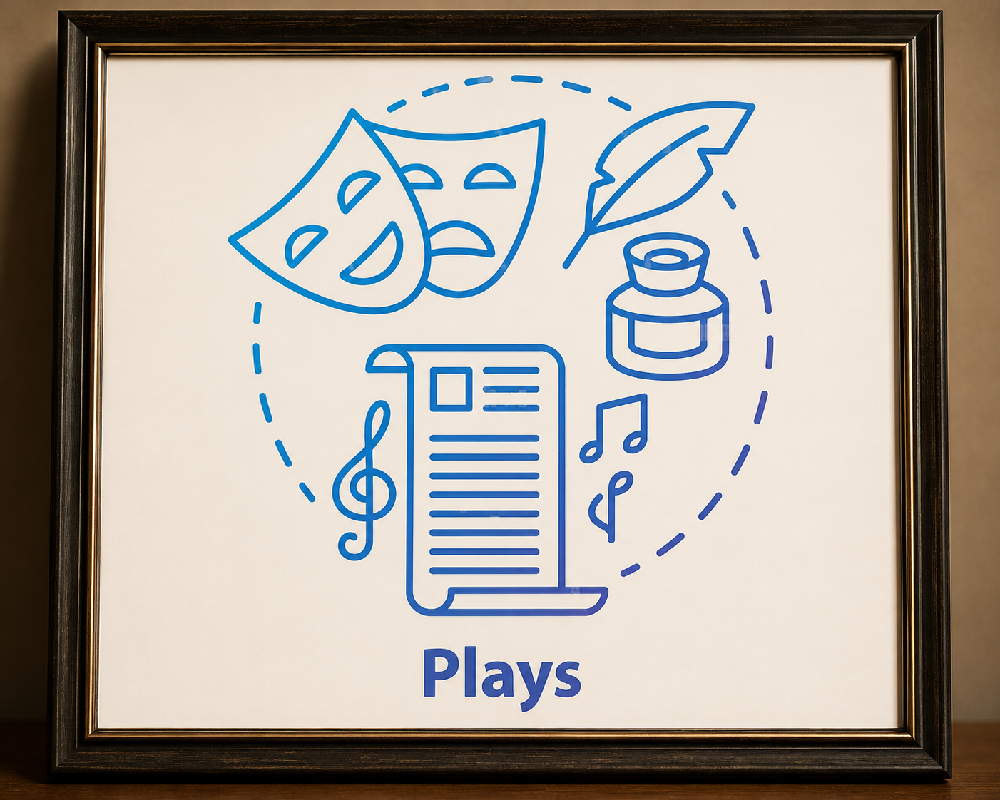
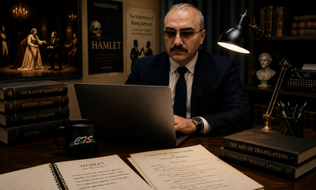
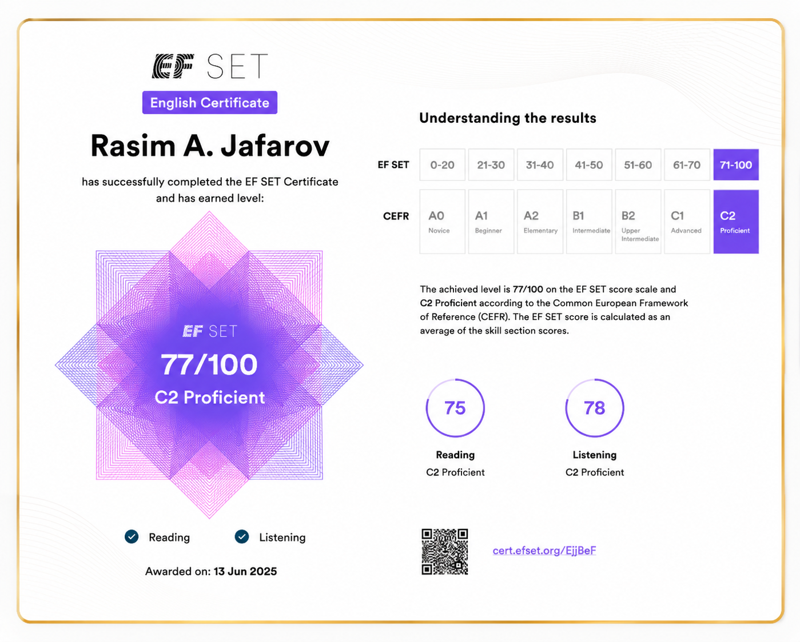

Translation
High-quality translation of technical, legal, medical and business documents.
Learn more →Language. Culture. Precision
Professional Translator, Interpreter & Language Consultant
Specialized in Oil & Gas, Legal, Military, Technical and Medical Translation


How I can help you
High-quality translation of technical, legal, medical and business documents.
Learn more →Consecutive, simultaneous and liaison interpreting for meetings, conferences and events.
Learn more →Professional editing and proofreading to ensure accuracy, clarity and consistency.
Learn more →Language strategy, content localization and cross-cultural communication support.
Learn more →Translation of novels, books, essays, memoirs, poetry, drama and other literary works.
Learn more →

Professional translation services across a wide range of industries and document types, ensuring linguistic accuracy, technical precision and cultural relevance.

Professional consecutive, liaison and conference interpreting services for meetings, negotiations, site visits, inspections, corporate events, international conferences, technical workshops and civil and military projects.


Professional editing and proofreading services delivered in collaboration with Charles Ainsworth, a native English-speaking professional linguist, with over 15 years of joint experience ensuring linguistic accuracy, stylistic consistency, terminology verification and publication-ready quality.
Professional language consulting services covering localization strategy, multilingual communication, terminology management and cross-cultural communication support. We provide practical language solutions for businesses, organizations and international projects, with consultation and advisory support available by phone, email or online meetings on a 24/7 basis whenever required.

Professional literary translation services for novels, memoirs, biographies, essays, poetry, drama, stage plays, screenplays and other creative works. Particular attention is paid to preserving the author's style, tone, cultural nuances, artistic expression and emotional impact while ensuring natural readability for the target audience.

About me
I am a professional translator, interpreter, editor and language consultant with more than 34 years of experience across the oil & gas, legal, technical, medical and literary sectors. My work combines linguistic precision, subject-matter expertise and a deep understanding of cross-cultural communication.
In the mid-1990s, I had the honour of working as an interpreter for the President of the Republic of Azerbaijan, Heydar Aliyev, during official meetings and international engagements. That experience became an important foundation for my later work in high-level governmental, corporate and international interpreting.
Over the course of my career, I have worked with leading organizations including BP, SOCAR and the Azerbaijan International Operating Company (AIOC), and have served as an official translator at major global events such as COP29 in Baku and the World Urban Forum (WUF13).
Alongside corporate and conference work, I am an accomplished literary translator and the author of translations of more than 28 stage plays by Azerbaijani, Russian, Israeli, Georgian and Spanish playwrights. I am also currently working on two English-language book projects and remain actively involved in literary translation, editing and publishing.
As the founder and owner of CTS Translation and CTS Translation Plus, I provide professional language solutions to clients in Azerbaijan and internationally. I am also the publisher of CTS Baku Magazine, an electronic bulletin focused on business, culture, international affairs and developments relevant to Azerbaijan and the wider region.
My mission is simple: to deliver accurate, culturally appropriate and impactful communication that connects people, bridges cultures and builds lasting trust.
What clients say
Thank you for your professional and high-quality work. We are also happy to see your friendlier attitude. Amazing!
